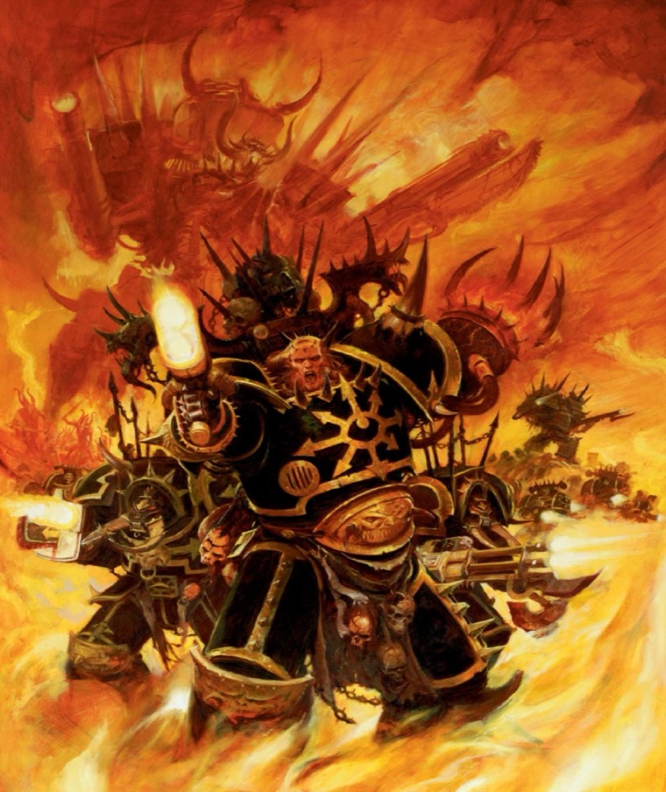
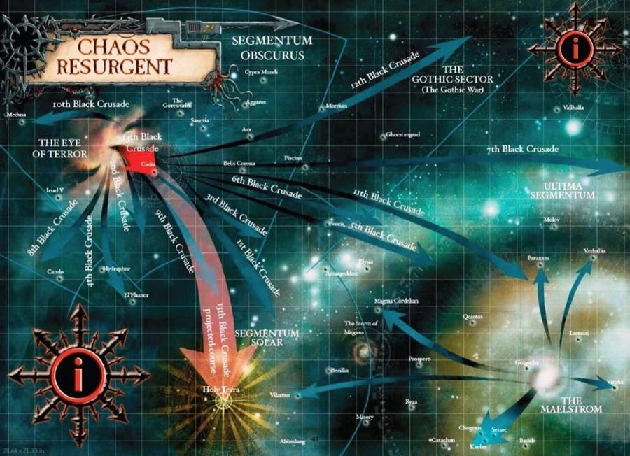

Black Crusade
| Black Crusades | |
|---|---|
| Thirteen invasions of the Imperium from the Eye of Terror | |
 The Thirteenth Black Crusade, shown in a pict-capture taken by a Cadian observer | |
| Date | 781.M31 – 999.M41 (thirteen crusades, intervals of 80 to 1,000 years) |
| Location | Cadian Gate and the sectors of the Segmentum Obscurus; at times the Segmentum Solar |
| Result | Twelve Imperial victories of varying cost; the thirteenth ended in the fall of Cadia and the opening of the Great Rift |
| Belligerents | |
| Imperium | Chaos |
| Commanders and leaders | |
| Lord Castellans of Cadia Lord Admiral Ravensburg Many sector commanders | Abaddon the Despoiler Perturabo (tenth) Daemon Prince Tallomin (third) Lords of the Black Legion |
A Black Crusade is a war in which the scattered powers of Chaos in the Eye of Terror unite under a single warlord and fall on the Imperium at once. The Imperium has recorded thirteen. All were launched by Abaddon the Despoiler, Warmaster of Chaos and master of the Black Legion, and each began in the region around the Eye called the Cadian Gate. Of the thirteen, the first set the pattern, the twelfth, the Gothic War, was the largest of those fought before the last, and the thirteenth, in 999.M41, ended with the Fall of Cadia and the birth of the Great Rift.[1][2]
The term has a precise and a loose sense. In the precise sense it refers to a campaign led by a Warmaster of Chaos Undivided, who has bound the Traitor Legions, the mortal warbands and the daemonic hosts of the Eye to a common purpose. In the loose sense, used by officers of the Astra Militarum who have manned the Gate for ten thousand years, it can refer to any major incursion out of a warp rift, and the Imperial Navy has applied it to large Chaos raids from smaller rifts as well. The scholars of the Inquisition prefer the precise sense, since only a few Chaos leaders in any age have had the standing to unite the Eye, and it is the union that makes the war dangerous.[2]
Nature of a Black Crusade
[edit]The Warmaster
[edit]Each Black Crusade needs a leader acknowledged by the Heretic Astartes. The first Warmaster of Chaos was Horus, who was slain at the end of the Horus Heresy. Ezekyle Abaddon, his First Captain, took up the title in the following centuries, and he is the only Warmaster to have led a Black Crusade. The Traitor Legions did not all accept him at once, and the Sixth Black Crusade, in which he destroyed a rival warband of his own Legion, shows that the claim was still being enforced in the 36th millennium.[2]
To command a Black Crusade is held to be the highest honour that the Ruinous Powers can give a mortal. The prize for a successful commander is ascension to daemonhood. Inquisitors have noted that Abaddon, after thirteen crusades, has not been recorded as receiving it.[2]
Composition of the host
[edit]A Black Crusade is a combined arms campaign of the Traitors. Its core is the Black Legion's Chaos Space Marines, joined by warbands of the other Traitor Legions who have been persuaded or compelled to accept the Warmaster's command. They are followed by renegade regiments and fleets, cults raised on the Imperial worlds that the crusade will attack, mutants and slave armies, Daemon Engines, and above all the daemons of the four Ruinous Powers, whose attention is the difference between a raid and a crusade. The fleet that carries this host, called the Black Fleet in later records, is made of Traitor warships, captured Imperial ships and the ancient vessels of the Eye, and travels through warp routes that no Imperial Navigator can follow.[2]

The Imperium regards the cult networks as the most dangerous element. Cadia's defenders in the final war found that cultists had been seeded among their own supply lines and garrisons for decades, and the Inquisition has since given the detection of such cells equal priority with the guarding of the Gate itself.[3]
The Cadian Gate
[edit]Every Black Crusade has had to pass through the Cadian Gate. The Eye of Terror is surrounded by storms that destroy ships entering or leaving, but a corridor of calmer space runs from the Eye toward the Segmentum Obscurus, and for ten thousand years the Imperium held its mouth with the fortress world of Cadia. After the first crusade the High Lords of Terra settled the world, fortified it, and made its people into a warrior society. Every Cadian was trained for war from childhood, and the regiments that came from its Kasrs set the model for the Astra Militarum. The Gate was also guarded by a chain of fortress worlds and Navy bases, and at its height held some 21 Space Marine Chapters.[1]
Many of the Eye's wars have been fought against Cadia directly, as a siege of the Gate. The Black Crusades have more often tried to go around it. They have struck at sectors on the far side, such as the Gothic Sector, and used the pressure to draw the Gate's defenders away. Abaddon's earlier crusades are now understood to have been, among other things, tests of Cadia's strength and attempts to learn its defences, preparation for a final assault.[2]
The thirteen crusades
[edit]The table gives the Administratum's list as revised after the Fall of Cadia. Details of the earlier crusades are drawn from the Cadian Chronicle, which survived the loss of the fortress world only in copies. Dates before the 36th millennium are approximate.
| No. | Date | Also called | Principal theatre | Summary and outcome |
|---|---|---|---|---|
| 1st | 781.M31 | First Battle of Cadia | Cadian Gate, Segmentum Obscurus | Abaddon's first attempt to renew the war of the Heresy. His warbands crossed the Gate and killed millions in the first week, and several worlds fell before the Imperium could respond. The campaign failed, but it showed the Imperium that the Gate needed a permanent garrison, and Cadia was resettled and fortified as a result. In the aftermath Abaddon recovered the daemon-sword Drach'nyen from the world of Uralan, and was recognised as Horus's heir. |
| 2nd | 597.M32 | Belis Corona Sector | A raid on the shipyards of Belis Corona, in which dozens of cruisers under construction were destroyed. The Despoiler cursed the worlds of the sector with a taint of the Warp, and withdrew before the Imperium could assemble a response. | |
| 3rd | 909.M32 | Cadian Gate; Shrine World of Gerstahl | The Daemon Prince Tallomin led a frontal assault on the Gate with a daemonic horde, killing millions before warriors of the Space Wolves drove him into the Warp. While the Imperium was occupied, Abaddon desecrated the Shrine World of Gerstahl and destroyed the remains of the saint who lay there. | |
| 4th | 001.M34 | El'Phanor War | El'Phanor | The Black Legion besieged the Citadel of Kromarch, a fortress long held to be unbreachable. Abaddon broke the gates with Drach'nyen and the House of Kromarch was exterminated. |
| 5th | 723.M36 | Elysia Sector; Tarinth | Hundreds of worlds raided. On Tarinth the Despoiler lured two Chapters, the Warhawks and the Venerators, into the ruins of Kasyr Lutein and destroyed them between the Black Legion and a daemon host of Khorne. | |
| 6th | 901.M36 | Forge World of Arkreach | Abaddon turned on the Sons of the Eye, a splinter warband of the Black Legion that denied his authority. He fought beside them to take the Forge World of Arkreach, and then killed their leader, Drecarth the Sightless, in front of his followers. | |
| 7th | 811.M37 | Ghost War | Many sectors; Mackan | A campaign of concealment. Chaos fleets left the Eye and vanished, and years of raids, false trails and disinformation followed. At Mackan the Black Legion fought the Blood Angels, and a Chapter in grey, whose identity the chronicle does not give, is said to have saved them. |
| 8th | 999.M37 | Segmentum Obscurus | A ritual campaign dedicated to Tzeentch, in which Imperial citizens were killed in set numbers on worlds across the Segmentum. The Inquisition discovered the pattern and broke it, but not before many worlds had been saturated with death. | |
| 9th | 537.M38 | Antecanis; Cancephalus | The Black Legion destroyed Monarchhive, the capital of the world of Antecanis, and drew the fleets of the naval fortress of Cancephalus into a seventeen-year war that exhausted both worlds. With the fleet gone, Abaddon ravaged the sector. The Chapters called to the defence suffered bitter reverses. | |
| 10th | 001.M39 | Conflict of Helica | Helican Sub-sector, Scarus Sector | A joint campaign of Abaddon and the Daemon Primarch Perturabo. The Iron Warriors besieged the worlds of the Medusa system and brought the Iron Hands close to destruction, while the Black Legion attacked the sub-sector capital. Imperial reinforcements forced a retreat, but the Traitors carried away detailed plans of Medusa's defences. |
| 11th | 301.M39 | Cardinal World of Relorria | A navigational error by a captured daemon placed the Black Fleet in the path of an Ork Waaagh!. The Black Legion fought it to a standstill on Relorria and withdrew, carrying specimens for experiment. | |
| 12th | 139.M41 | Gothic War | Gothic Sector | An attempt to seize the Blackstone Fortresses. Abaddon destroyed a world and a star before he was driven back by Battlefleet Gothic and the Aeldari. He escaped with at least two of the Fortresses. |
| 13th | 999.M41 | Fall of Cadia | Cadian Gate; the Gothic, Belis Corona and Agripinaa systems | The largest war between Chaos and the Imperium since the Horus Heresy. Cadia fell, the Cadian pylons were destroyed, and the Eye of Terror expanded into the Great Rift, which cut the Imperium in two. Abaddon withdrew from the sector, but the Gate no longer stood. |
Observations on the series
[edit]Imperial officers who studied the list in the 41st millennium recorded a pattern. The early crusades were large and costly, and the Imperium's response was to build. After the first, Cadia was resettled. After the second, its cities were rebuilt in the defensive plan they kept to the end. The middle crusades were smaller and more varied. Several had purposes of their own: a ritual, a feud, a hunt for a weapon, or the destruction of a single fortress. Their aims were seldom visible at the time. The Eighth was identified as a ritual campaign only when the Inquisition noticed that the places and numbers of its massacres fell into a pattern. The Seventh left the Imperium with no map of what the enemy had done.[2]
The Inquisition came to believe that all of them were part of one plan. Inquisitor Horst, who followed the Twelfth, wrote that Abaddon was pressing the defences of the Imperium to learn which would hold and which would not, and that the great fortress at the Gate was the object of his study. The Despoiler's own name for the plan, recovered from a captured Black Legion cipher, was the Crimson Path, a route by which the daemonic hosts of the Eye might pass to Terra itself. The Thirteenth Black Crusade opened it.[4][3]

Imperial response
[edit]The fortification of the Gate
[edit]The principal Imperial response to the Black Crusades was the fortification of Cadia and the system of fortress worlds and monitoring stations around it. Cadia was also a garrison for the Astra Militarum, a recruiting ground, and a training world for officers from across the Imperium. Surrounding it were the worlds of the Belis Corona and Agripinaa systems, among them Kasr Holn, Kasr Partox and the Forge World of Agripinaa, which together provided the armour, ammunition and ships on which the Gate's defence depended.[1]
The Navy's response was a series of sector fleets under the Segmentum Command at Bakka and Port Maw. The Space Marine Chapters on guard at the Gate were stationed there by the High Lords, and the Chapters of the Cadian Gate, called by one officer the Astartes Praeses, were reinforced by passing Chapters whenever a Black Crusade was identified.[1]
Failures of the defence
[edit]The Imperium's own accounts note failures of understanding as often as of arms. The Gate was held for ten thousand years by regiments of the Astra Militarum who were told that the war was a defence against an enemy that sought to break out and conquer. They were not told that the pylons in the soil of their world, which the Mechanicus had never understood, were what held the Eye of Terror in check. The Mechanicus did not learn their function until the last days of Cadia, and the Inquisition's warnings about the purpose of the crusades were not acted on in time.[3]
Black Crusades in the Era Indomitus
[edit]After the Fall of Cadia no Black Crusade of the older kind has been recorded. Abaddon's fleets have left the Cadian Gate, which is no longer a gate but a region of broken worlds around a shattered planet. The Black Legion and its allies range across the Segmentum Obscurus and into the Imperium Nihilus, with Grand Companies of Chaos Knights and Traitor Titans at their disposal. The Inquisition holds that the Despoiler will launch a fourteenth crusade, with the object of the Crimson Path, but the Imperium has no more firm information than that.[3]
Timeline
[edit]| Date | Event | Theatre |
|---|---|---|
| 781.M31[a] | First Black Crusade: Abaddon's warbands cross the Gate and kill millions in the first week; Cadia is resettled and fortified afterwards | Cadian Gate |
| 597.M32[b] | Second Black Crusade: the shipyards of Belis Corona are raided and dozens of cruisers destroyed | Belis Corona |
| 909.M32[c] | Third Black Crusade: Tallomin assaults the Gate; the Space Wolves drive him back and Abaddon desecrates Gerstahl | Cadian Gate |
| 001.M34[d] | Fourth Black Crusade: the Citadel of Kromarch is breached with Drach'nyen and the House of Kromarch is exterminated | El'Phanor |
| 723.M36 | Fifth Black Crusade: the Warhawks and Venerators are destroyed in the ruins of Kasyr Lutein on Tarinth | Elysia Sector |
| 901.M36 | Sixth Black Crusade: Abaddon destroys the Sons of the Eye at the Forge World of Arkreach | Arkreach |
| 811.M37 | Seventh Black Crusade, the Ghost War: concealed raids, and the Black Legion fights the Blood Angels at Mackan | Mackan |
| 999.M37 | Eighth Black Crusade: a ritual campaign dedicated to Tzeentch is broken by the Inquisition | Segmentum Obscurus |
| 537.M38 | Ninth Black Crusade: Monarchhive is destroyed and the seventeen-year war at Cancephalus begins | Antecanis |
| 001.M39 | Tenth Black Crusade: the Conflict of Helica, a joint campaign with Perturabo against the Medusa system | Helican Sub-sector |
| 301.M39 | Eleventh Black Crusade: the Black Fleet is halted by an Ork Waaagh! at Relorria | Cardinal World of Relorria |
| 139.M41 | Twelfth Black Crusade, the Gothic War: an attempt to seize the Blackstone Fortresses is driven back by Battlefleet Gothic and the Aeldari | Gothic Sector |
| 999.M41 | Thirteenth Black Crusade: Cadia falls and the Great Rift opens across the galaxy | Cadian Gate |
See also
[edit]Notes
[edit]References
[edit]- ^ a b c d Codex Imperialis (rev. 980.M41). Adeptus Terra.
- ^ a b c d e f g Chronicle of the Cadian Gate (M36, revised M41). Cadian High Command, Kasr Kraf (surviving copies).
- ^ a b c d Records of the Indomitus Crusade (ongoing). Office of the Lord Commander.
- ^ Horst, Inquisitor (c. 160.M41). Testimony on the Hand of Darkness. Ordo Xenos (sealed).